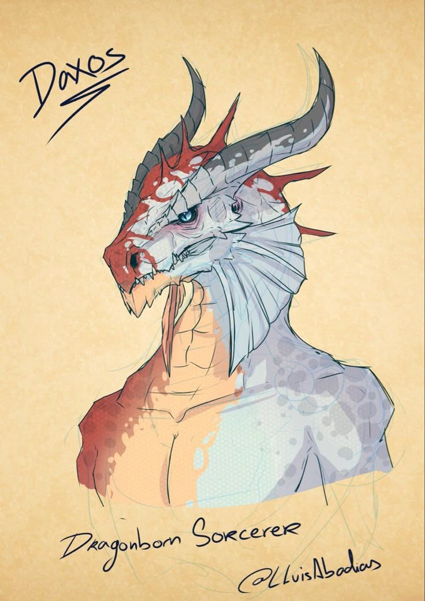
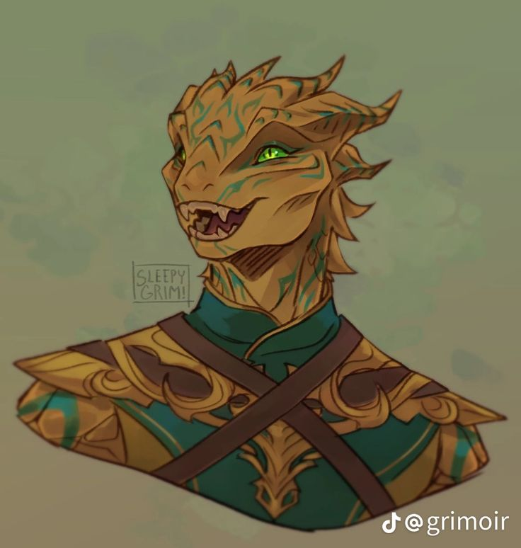
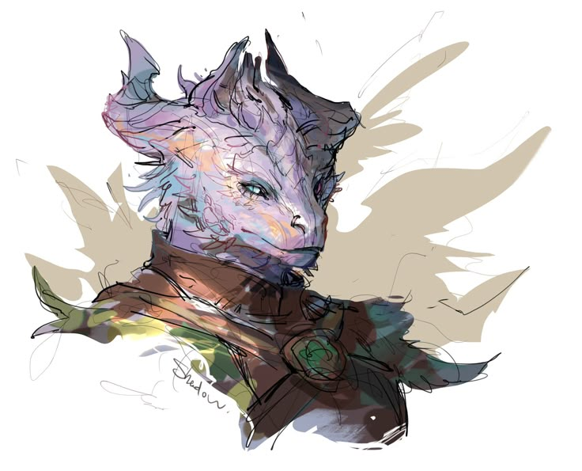

A Família Magnos governa Alifa, a região ao norte do Reino Polaris, por incumbência direta da coroa. Nascida do exílio e da lealdade, essa linhagem carrega os títulos de Duque e Duquesa para seus governantes, e de Marquês para seu herdeiro.
✦ DUQUES DE ALIFA

✦ família magnos
Daxos Magnos
Um refugiado acolhido pela antiga rainha Aldmar enquanto tentava chegar ao Reino Polaris, Daxos tornou-se amigo próximo e estrategista da coroa. Foi incumbido de cuidar de Alifa, a região ao norte do reino, onde ergueu seu legado. Hoje falecido, seu nome ainda sustenta o título que sua família honra.

✦ família magnos
Glory Magnos
Chegou ao Reino Polaris ao lado do Rei do Reino da Chama Eterna, mas foi lá que reencontrou Daxos — e escolheu ficar. Ao lado do esposo, viu Alifa florescer; após sua partida, assumiu o governo da região junto ao filho, mantendo viva a obra que os dois construíram juntos.
✦ HERDEIRO

✦ família magnos
Ploc Magnos
Filho único de Daxos e Glory, Ploc cresceu entre os assuntos de Alifa e a memória do pai. Hoje governa a região ao lado da mãe, dando continuidade ao legado que o exílio de um estrangeiro transformou em um ducado leal ao Reino Polaris.